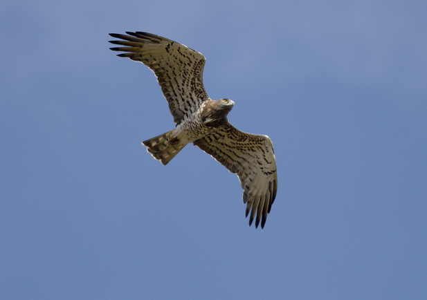

¿Sabes qué pájaro es el de la foto? Aquí van las pistas: Es una de las especies de aves rapaces que puedes encontrar en el Vedado de Peñaflor. Esta rapaz, de coloración rojiza, cola ahorquillada y vuelo muy ágil, durante la invernada forma dormideros comunales en bosquetes o pequeños setos fluviales.
Seguir leyendoNoticias
En 2018 subimos al blog una lámina para diferenciar rapaces. Pero, en cielos grises marcas y colores pasan desapercibidos. Por eso, semanalmente, subiremos nuevas láminas para diferenciarlas por su silueta, sin colores ni marcas.
Seguir leyendoCulebrera europea dándolo todo #culebreraeuropea #circaetusgallicus #rapaces #birdsphotography
 Seguir leyendo